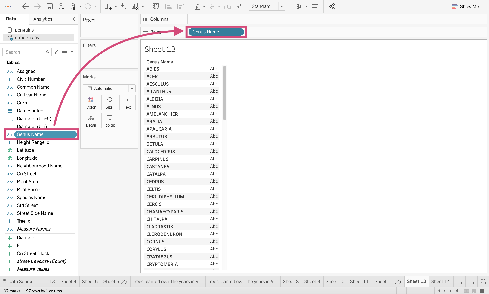
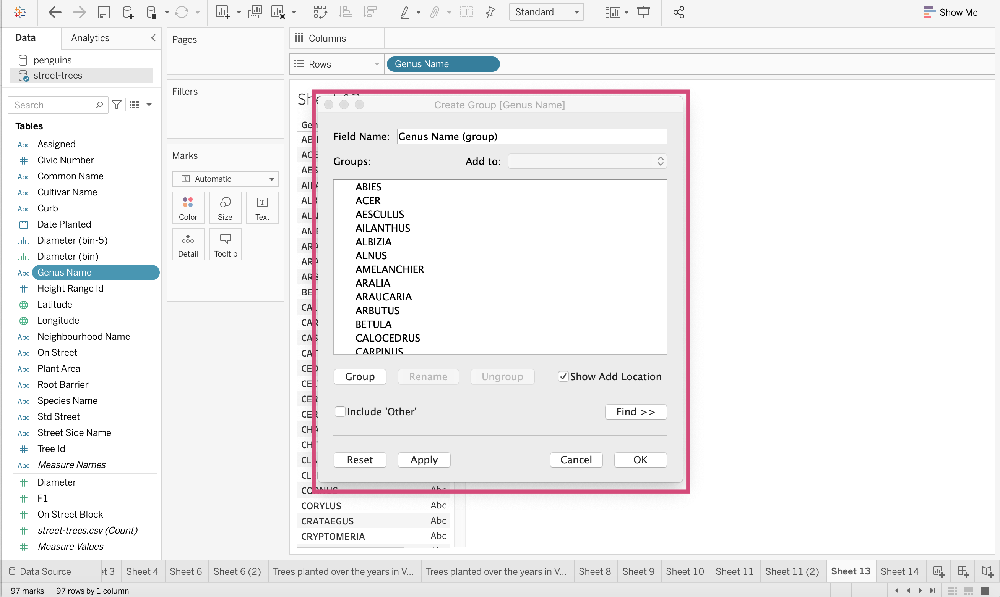
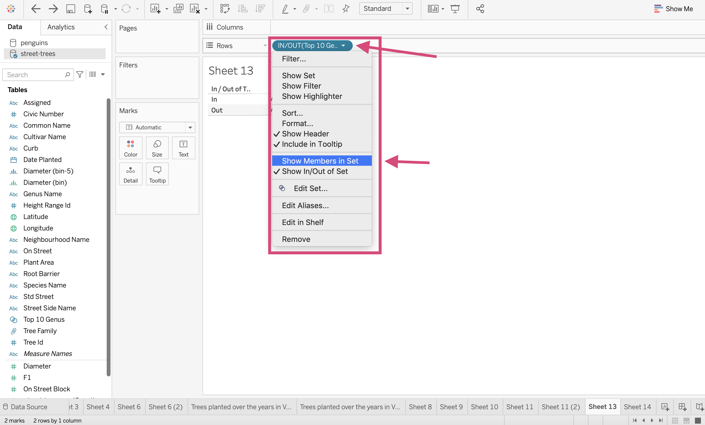
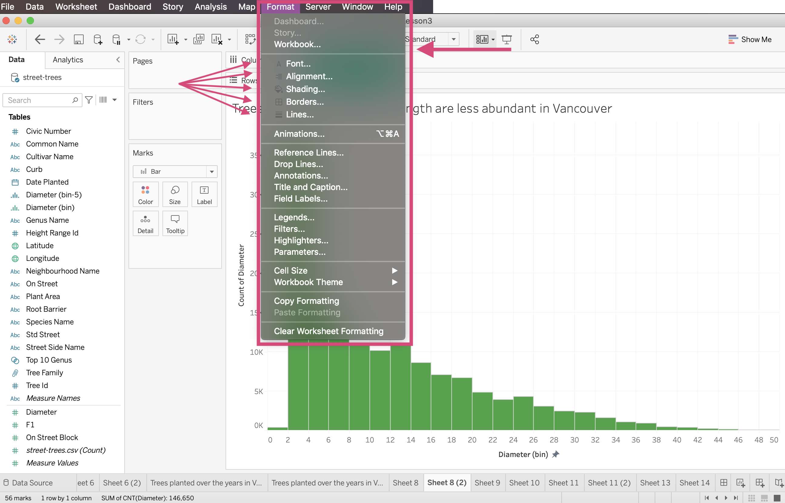
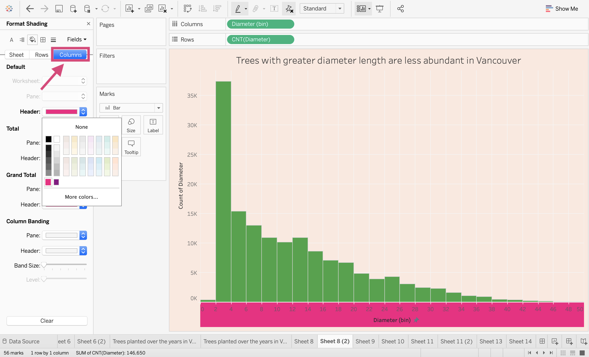
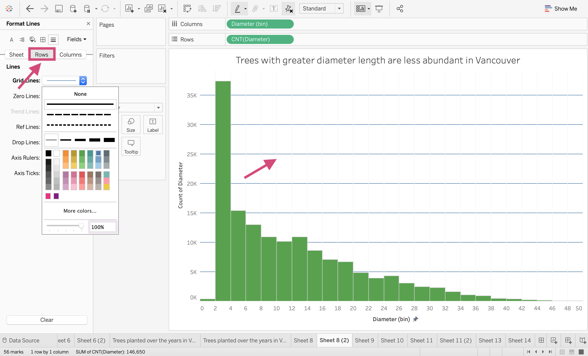
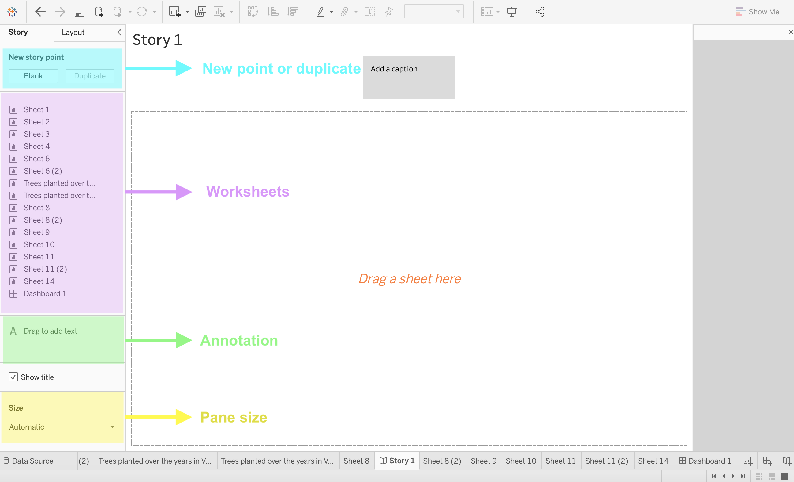
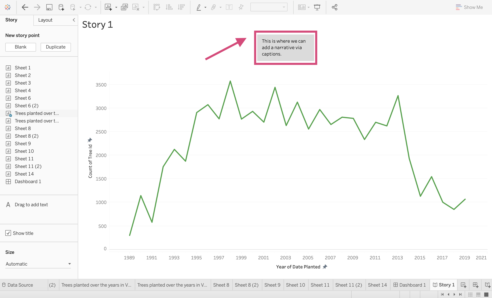
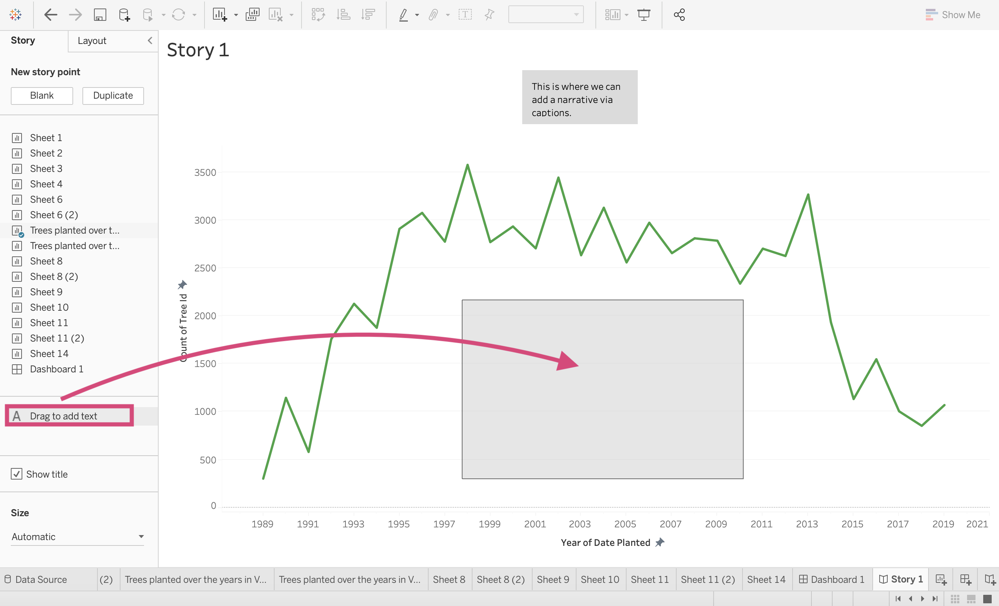

4. Choropleths, Formatting, Stories and Dashboard Extras¶
4.1. Making a Choropleth Map¶
Let’s try to create another map but this time let’s try and answer how many trees there are in each Vancouver neighbourhood. We can visualize this by using a choropleth map.
Step by Step Instructions
1. Locate yourself to the spatial dataset that we connected to the Data Source local-area-boundary.geojson.

2. Drag the Geometry Dimension to the Details icon in our Marks card.

Right away, a map with all our neighbourhoods will be visible. Tableau is using Latitude and Longitude fields created from this geojson file to create a map this time.

3. Now let’s use our street-trees data to count the number of trees in each neighbourhood. From the Data tab, navigate yourself to the street-trees data source.

4. Drag the Tree Id field to the colour icon in the Marks card so that we can use a colour channel to communicate the number of trees.

Warning
This may generate a popup winder informing us that we need to add a relationship to our primary data source.

We can blend the data sources now by clicking the chains next to the Neighbourhood Name field so that they turn red and now link the 2 sources.

5. Once the 2 sources are blended and there is a red chain icon next to our Neighbourhood Name field, we can convert the Tree Id field from our colour channel and convert it to a Count Measure by clicking it and selecting Measure followed by Count from the dropdown menu.

We are still not quite at a choropleth map; we need one more thing!
{kind=link}
6. Drag the Neighbourhood Name field from the primary source (the source we did not use the latitude and longitude fiends to make the map from) to the Details field in the Marks card.

Ahhh! Now we have a choropleth map!
{kind=link}
7. If when we hover over the map, it shows us the number of trees in each neighbourhood!
{kind=link}
Easy Peasy right?!
4.2. Calculations Functions¶
4.2.1. Simple¶
Function |
How to call it |
|---|---|
Absolute value |
|
Ceiling |
|
Floor |
|
Log |
|
Max |
|
Min |
|
Power |
|
Round |
|
Sign |
|
Square root |
|
Square |
|
4.2.2. Geometric Functions¶
Function |
How to call it |
|---|---|
Arc Cosine |
|
Cosine |
|
Arc Sine |
|
Sine |
|
Arc Tangent |
|
Tangent |
|
Cotangent |
|
Degrees |
|
Radians |
|
pi |
|
4.2.3. Logical and Conditional¶
Function |
How to call it |
|---|---|
In |
|
Else |
|
Else if |
|
And |
|
Case |
|
4.2.4. Aggregate Functions¶
Function |
How to call it |
|---|---|
Standard Deviation |
|
Median |
|
Pearson correlation |
|
Variance |
|
4.3. Level of Detail Functions¶
LOD functions allow further control or granularity of your calculations, for example, the ability to obtain the total sales per customer which will then allow you to calculate the average amount a customer spends in different regions.
{ INCLUDE [Customer Name] : SUM([Sales]) }
This is a more advanced technique and will likely be covered in future classes (without me), however here is a great resource that explained how to create them in more detail.
4.4. Groups¶
To group something you are creating a higher category of a subset.
You are grouping members from a single dimension. Perhaps our Genus category could be grouped further.
Step by Step Instructions
1. Let’s first see how many different tree genera there are. We can go a step further and group these genera into a family.
{kind=link}
2. Let’s right-click on Genus Name and Create Group… by diving into the drop-down sections.
{kind=link}
This will generate a popup.
{kind=link}
3. Let’s add the following Genus names together (holding down the command button on a mac to select multiple):
Abies
Cedrus
Larix
Picea
Pinus
Pseudotsuga
{kind=link}
You’ll want to click the Group button to combine them. You will be able to edit this group and add more by selecting a genus name and selecting the desired group under the Add to dropdown on the upper right side of the popup.
4. Rename this group, “Pine” so it’s obvious to us what tree family it is.

5. Let’s make a second “Birch” tree group.
Select the following and then use the Group button to combine them in a group.
Alnus
Betula
Carpinus
Corylus
{kind=link}
Let’s then rename this group “Birch”.
{kind=link}
6. Since I don’t have time to make several families, I’m going to include an “Other” group by ticking the Include ‘Other’ option. This will make a group for all the remaining genus not already assigned.
{kind=link}
7. If we inspect this new field, we can see our 3 groups!
{kind=link}
8. If we make a bar chart with this new field, you can see that most of our tree observations are in the “Other” category. (Remember this is the total trees not the number of genera in the group)
{kind=link}
4.5. Sets¶
Many often get confused between the sets and group options offered by Tableau. Tyler Lubben, MBA explains it in the following manner:
“Grouping in Tableau is grouping multiple members in a SINGLE dimension into a higher category and creating a set is grouping members from MULTI dimensions and/or condition into a dynamic or constant group. So, sets are just a more complex and dynamic grouping”
We can make sets using multiple conditions on multiple fields but for our example, we are going to show a simplified way of using sets by segregating the 10 most occurring tree genera in our dataset by the number of observations. This is a dynamic field, meaning if we update our data, this field will update also.
Step by Step Instructions
1. Just like we started making groups, right-click on the Genus Name and under the Create Option select Set..
{kind=link}
2. This will generate another popup window where we want to name our new field -> “Top 10 Genus” and then switch to the Top tab.
{kind=link}
3. Here we select the By field option and specify Top 10 by Genus Name and aggregate by Count. We finalize everything by clicking OK.
{kind=link}
4. Let’s take a look at what happened. Drag the new field Top 10 Genus to the Rows shelf. This doesn’t show the categories but that there are members either in the set or out of the set.
{kind=link}
4. We can look at all the members we selected (aka the top 10 occurring tree genus in the data) by right-clicking the field on the shelf and from the menu, selecting Show Members in Set.
{kind=link}
This now shows us the 10 genera!
{kind=link}
4.6. Formatting Titles, Axes, Gridlines and Charts¶
Ahh, the little extras that can make all the difference!
Although there are so many ways to format your worksheets and dashboards, we are going to showcase a select few that should get you on the right track for other formatting options and methods.
Let’s first get to the formatting toolbar.
We can do so in two ways, by right-clicking on your plot and selecting Format… …
{kind=link}
or through the upmost toolbar under Format…
{kind=link}
Note that using the latter allows you to make formatting decisions on a Workbook basis meaning that changes will be made to all the visualizations in your workbook.
For this tutorial, we will be making the changes on a worksheet basis for versatility.
4.6.1. Fonts¶
You can change the font in your visualization by the whole worksheet by selecting Sheet and then changing your designed font type, size and colour under the worksheet.
The Worksheet option will change the axis titles, tick marks for both axis and total and Grand total calculations you may have.
{kind=link}
{kind=link}
If you want to format the axis labels separately, then it’s best to switched tabs to either Rows or Columns.
{kind=link}
{kind=link}
This rule can be applied to the font. alignment, shading, borders and lines.
4.6.2. Shading¶
This is where the background of your graphs can be changed. Again, you can change the background for the entire pane, or give the axes different colours by selecting Columns or Rows.
{kind=link}

{kind=link}
4.6.3. Gridlines¶
Gridlines are controlled under the line icon.
We can change both the horizontal and vertical lines together under the Sheet tab and changing the colour and line width…
{kind=link}
or separately with the Columns or Rows tab.
{kind=link}
Tip!
Under this icon is also where we can format the colour, size, width and style of reference lines or trend lines.
4.7. Stories¶
In a short and to the point manner I’m going to quickly show you how you can make a Tableau Story.
Tableau Stories are where we can create a narrative to provide key details, information and insights that give context and a case for the insights you’ve discovered.
Stories are what I would describe as a slideshow presentation for your plots. Making static plots for specific filtered data and explaining them with annotation.
You can only have 1 worksheet per data point.
4.7.1. Story Workspace¶
{kind=link}
New Point or "Slide"
This is where we can create a new slide or point starting from scratch or working from a previous already created point.
Worksheets
We can choose our visualization from the sheets we’ve created.
Annotation
We can annotate and explain our findings with text and similarly to how we drag a worksheet or image in a dashboard, we can drag a textbox that will “Float” over our plot.
Pane Size
Just like we need to adjust the pane for multiple screen dimensions for dashboards, we must do the same for stories and the same methods apply. I prefer to maintain the Automatic sizing so that the dimensions adjust for multiple screens.
4.7.2. Quick Story Tutorial¶
Here is just a basic story tutorial so you are familiar with the tools and toggles necessary to create a Tableau Story.
Step by Step Instructions
1. Before we can do anything, we need to create a story page. using either the icon in the tool displayed or the icon at the bottom of the workspace, click on the New Story options.
{kind=link}
2. We are then greeted with our workspace. The first thing I do (similarly to what I do in Dashboards) is to change the layout size to Automatic.
{kind=link}
3. Now you can add a worksheet to your story point. You can add only 1 worksheet to a point but your story can be made of multiple sheets. We are dragging over our line plot to our centre panel.
{kind=link}
After we’ve dragged the sheet it will appear with a default caption option.
{kind=link}
4. We can edit our caption to give context to the insight we are trying to explain.
{kind=link}
5. In addition to a caption, we can annotate our plot directly with text by dragging the Drag to add text option to the workspace.
{kind=link}
6. This will generate a popup and you’ll be able to add your text and format it.
{kind=link}
Once you hit ok, you’ll be able to move it to your desired location.
{kind=link}
7. If we want to add a different plot to our story we can click on the Blank option under New story point or to build on your existing plot, we can click on the Duplicate option.
{kind=link}
This will give us an option to navigate through our story points and add an additional caption!
{kind=link}
{kind=link}
{kind=link}
{kind=link}
{kind=link}
{kind=link}
4.8. The Tooltip Feature¶
Dashboard and worksheet tooltip options are generated automatically but I’m going to dive a bit deeper into how to format them and other options.
Step by Step Instructions
1. Let’s start by demonstrating with our map that is plotting every tree in Vancouver.
{kind=link}
2. If we hover over one of the trees, the tooltip automatically shows any of the fields we are using, which in this case, are only the latitude and longitude fields.
{kind=link}
3. Similar to how we need to drag the field we want to filter on in dashboards to the filter column, we must drag the field we want in the tooltip to the Tooltip icon in the Marks card. Here we drag Genus Name.
{kind=link}
This will add it now to the tooltip when we hover!
{kind=link}
4. We want to do a bit more editing on the formatting of this though. In order to do that, we click on the Tooltip icon.
{kind=link}
This will generate a popup that shows the fields with labels on how they will appear!
We can edit the font size colour and alignment.
{kind=link}
5/. If we want to add additional fields and measure we can click on the Insert tab.
This will show us all the options. You’ll again notice that we can only add a dynamic field if we have used it in our workspace or added it to the Tooltip channel.
{kind=link}
We can add another field by dragging it to the channel.
{kind=link}
Now, when we open the tooltip options, we see it as an option and added to our area.

7. Let’s go ahead and edit it then. I’ve changed the font size and colour and removed the latitude and longitude fields.
{kind=link}
We can also decide how it will respond, instantly or with a slight delay.
8. Now when we hover on our plot, we see the updated formatted tooltip!
{kind=link}
Tip!
We can also link tooltips to already existing worksheets.
All you need to do is click on the Tooltip icon and then from the popup select the sheet under the Insert tab.
{kind=link}
I’ve selected the scatter plot and now we can see a graph as well as the other fields we selected when we hover over the respected tree.
{kind=link}
4.9. Quick Quiz¶
True or False: I can use Groups to combine categories based on conditions or other fields.
Between Sets and Groups, which of the following with let us show members In/Out of the dimension?
True or False: We can format on an entire workbook level.
Which of the following is not a formatting icon in the formatting toolbar; Font, Opacity, Alignment, Shading, Borders, Lines.
True or False: Stories can have multiple worksheets.
4.10. (If time) Shapes Demo¶
If we have time in class, I will demo a way to customize shapes used for marks.
I cannot include notes here due to copyright and licensing.